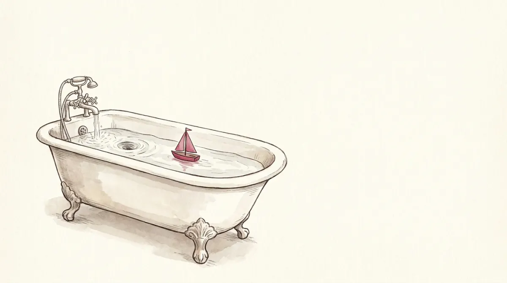
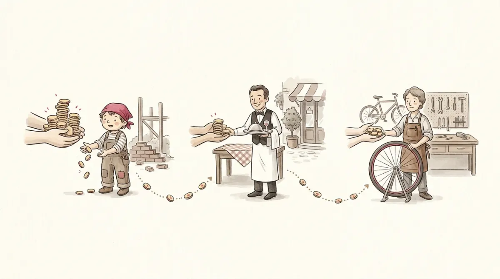

IS-LM is the topic that scares people off this course. Here's what it actually is: two lines on one graph. One line summarizes the goods market, one summarizes the money market, and where they cross tells you the economy's income and interest rate. Nine of the sixteen questions in the official mock are some version of "a policy moves one line; which way does the crossing point slide?"
The professor's own slides draw the route we'll take:
Four small ideas, each one sentence long, assembled into one picture. No step needs the previous one to be "mastered", only seen.
In the long-run chapters, prices adjust freely and production is fixed by factories, workers and technology. But in the short run, meaning months to a couple of years, many prices are sticky: catalogs are printed, wages sit in contracts, menus cost money to change. When prices can't move, something else must absorb changes in spending, and that something is production and employment. This is why recessions happen, and why policy can fight them.
Okun's law ties output to jobs: when GDP grows less, unemployment rises. On the exam it appears as a given equation, for example y = 3.2 − 2.1x, and you just solve for one variable. GDP expected to fall 1%? Then −1 = 3.2 − 2.1x, so x = 2.0: unemployment up 2 points. That's a real mock question, done.
The government hires a builder and pays her €100. She banks €25 and spends €75 at the trattoria; the owner spends €56 of that on a bike; the shop assistant spends €42 of that at the market…

Notice what the economy just did. It behaves like a fountain that pumps its own water: spending pours out, lands as somebody's income, and a steady share of it gets scooped straight back into the pump, where it becomes spending again.
That share has a name, and it's the only genuinely new symbol in this section: the MPC, the marginal propensity to consume, the fraction of each extra euro that goes back into the fountain rather than into the saving bucket. The builder's was 0.75; the €25 she banked was her other 0.25.
Now zoom out and count everything poured in one round. Three spouts feed the fountain, and they are the same spending buckets as Y = C + I + G + NX from Macro-01, minus NX (we keep the economy closed for now):
PE = C(Y−T) + I + G with C = C̄ + MPC·(Y−T)
Since spending rises with income, PE is an upward line, but flatter than 45°: each euro of income only adds MPC < 1 euros of spending. And the dashed 45° line in the chart is nothing mysterious. It is the fountain's balance rule, water out = water in: every point on it has planned spending exactly equal to production. The economy settles where PE crosses it. Drag G and watch:
Raising G lifts the whole PE line by ΔG, but equilibrium income moves along the 45° line by more than ΔG. The gap between those two is the multiplier, and the next section shows exactly where the extra water comes from.
You already met this chain in the builder story: each euro the government pours comes back around, three quarters as big every pass. Now watch it converge with exact numbers. The government opens its spout by €40:
The chain sums to a clean closed form, and it's the only multiplier formula you need:
ΔY = ΔG × 11 − MPC (and for taxes: ΔY = −ΔT × MPC1 − MPC)
With MPC = 0.75: government multiplier = 1/0.25 = 4, tax multiplier = −0.75/0.25 = −3. Why is the tax one smaller? A tax cut's first euro lands in pockets, and only 75% of it actually gets poured; the chain starts one link later. That asymmetry is itself a mock-exam question: raise G and T by the same 80 and ΔY = 80·4 − 80·3 = +80. Balanced-budget spending still stimulates, exactly one-for-one.
This is mock-exam question 3, solved the way you would at the desk:
Given: C = 200 + 0.7(Y − T), I = 150, G = 81, T = 32. Find equilibrium income and the fiscal multiplier.
1. Equilibrium means Y = PE: Y = 200 + 0.7(Y − 32) + 150 + 81
2. Tidy the constants: Y = 0.7Y + 431 − 22.4 = 0.7Y + 408.6
3. Collect Y: 0.3Y = 408.6 → Y = 1362
4. Multiplier = 1/(1 − 0.7) = 1/0.3 ≈ 3.3
Total tools used: one substitution, one division. This is "solve Y = 100 + 0.5Y" from Macro-00 wearing exam clothes.
Start by collecting a promise. Back in Macro-02, the pantry kept every euro busy, and a callout admitted that in real life money does sit still: in wallets, under mattresses, in accounts earning nothing. This is the chapter where that idle money takes over. The money market asks one question only: how much cash do people choose to keep parked, ready to spend, instead of lent out earning interest?
Think of the interest rate as the parking fee on money. Cash sitting in your wallet earns nothing, so the interest it could have earned elsewhere is exactly what keeping it parked costs you. When the fee is low, people shrug and park plenty; when it is high, every idle euro stings, and people keep as little as they can get away with. That is a downward-sloping demand for parked money, L(r): a wish list, one desired cash pile for every possible fee. The supply side is simpler: the central bank just picks how much money exists. Slide it:
And here is the film behind that slider. The central bank prints extra money and buys bonds with it, so people wake up holding more cash than they wanted at the old fee. Nobody likes over-parking, so everyone tries to un-park the extra: offering it as loans, pushing it into bonds and deposits. But here is the trick: the cash does not vanish when one person lends it, it just lands in someone else's pocket. Collectively, the town has no choice but to hold every euro the central bank printed. So the un-parking scramble does the only thing it can: it floods lenders with offers, borrowing gets cheap, and the fee falls, until people look at the new low fee, shrug, and decide the extra cash is fine where it is. The market clears not by changing how much money exists (only the central bank can do that) but by changing how willingly people hold it. Same shape as every market so far: fixed stock, a price that moves until the stock is willingly held.
Two exam-ready consequences:
Now assemble, and watch the two halves of the course shake hands. IS is Macro-02's project ladder wired into this chapter's fountain: when the parking fee r rises, projects like Rosa's oven stop clearing the bar, the investment spout pours less, and the multiplier runs the loss around the chain, so income falls by a multiple. Higher r, lower Y: drawn in (Y, r) space, a downward slope. LM is the money market you just left: a busier town needs more walking-around cash, so higher Y raises the demand for parked money and bids the fee up. Higher Y, higher r: upward slope.
Reading rules, same as always: each curve is a wish list (all the Y-and-r combinations that keep its own market happy), the dot is what actually happens, and quantity reads sideways. Two curves, one crossing, and the crossing point is the economy. You have three levers. Fly:
Every IS-LM question gives you a policy (or two) and asks about Y, r, or what a policymaker should do. Your procedure: (1) which curve does each policy move, and which way? (2) slide the crossing point. (3) if two policies push Y (or r) in opposite directions and no sizes are given, the honest answer is "cannot tell", and yes, sometimes that is the correct option. You just used it in the cockpit; the exam version is the same, minus the sliders.
The reflexes, isolated. Short run, IS-LM, one shock at a time: what happens to income and the interest rate?
| Lever | Curve | Y | r |
|---|---|---|---|
| G↑ (or T↓) | IS shifts right | ↑ | ↑ |
| G↓ (or T↑) | IS shifts left | ↓ | ↓ |
| M↑ | LM shifts right/down | ↑ | ↓ |
| M↓ | LM shifts left/up | ↓ | ↑ |
| Government multiplier | ΔY = ΔG · 1/(1−MPC) |
| Tax multiplier | ΔY = −ΔT · MPC/(1−MPC) |
| Balanced budget (ΔG = ΔT) | ΔY = ΔG (the two multipliers differ by exactly 1) |
| Okun's law | given on the exam; just solve the linear equation |
| Opposite pushes, no sizes | the answer is "cannot tell", legitimately |
One 4-row table of directions + two fractions. That's the model with the big reputation.
Six questions, real mock-exam style: +1 right, −⅓ wrong, 0 skip.